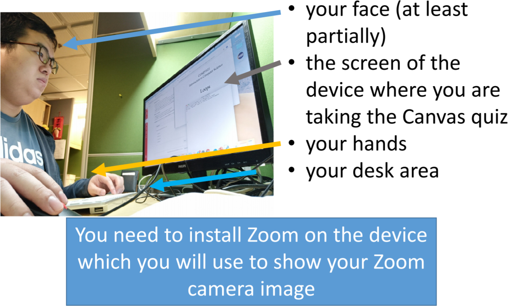

In the Zoom meeting, you need to share a live video of yourself (not your profile picture!)
You need to use an external device with a camera, e.g. your mobile phone or a tablet, to show yourself while you are taking the exam
Your camera must show:

We will record the meetings together with your live videos
During the exam, we may check your identity by pulling you into a breakout room
We will ask you to show your student ID as well as sharing your screen in the room
To make sure you are ready for the exam, we suggest you get into the meeting room earlier, say at least 20 mins before the start of the exam
Your Computer Desktop
You can only use these things during the exam: Zoom, a text editor and a browser
You need to join Zoom on your computer to receive exam instructions (text on the chat or voice)
You need to close all other programs
There is no communication with others
⚠Summary of Important Things You Need to Know about the Zoom Meetings
⚠
The Zoom meetings will start around 8:00am on the day so you can get ready early
You must go to the Zoom meeting that you are assigned to
(penalty will be applied if you fail to do so)
You must be in the Zoom meeting 10 minutes before the start of the exam, i.e. you must be in the Zoom meeting before 8:20am(penalty will be applied if you fail to do so)
You must change your profile name to the one that is shown on your Student ID in the meeting
(penalty will be applied if you fail to do so)
You must show a live video of yourself and your computer as described above
(penalty will be applied if you fail to do so)
If you are not sure about the correctness of your video, join the meeting early and make sure it is okay
You need to plug in your mobile, notebook and everything to make sure battery is full all the time!
You must not use virtual background in your video
(penalty will be applied if you fail to do so)
You need to make sure your Student ID or Personal ID is ready
You need to make sure your microphone is working, as we may unmute it in the breakout room
You must follow usual exam rules such as no talking and no messaging
(you will get an F for the course immediately if you do that)
The Content of the Final Exam
The exam will have roughly 20-30 questions
You will work on the exam online inside a canvas quiz
You will have multiple-choice questions, short questions and fill-in-the-blanks
The style of the questions will be similar to the final review questions, but sometimes longer
The exam includes everything that has been discussed in the lectures and labs
Revising For The Final Exam
The exam is not really a test of memorisation, it is more of
a test of understanding, so a good way to prepare is:
Go through all the notes and make sure you understand them
Go through all the labs and make sure you understand them
'Play' with your lab work, make sure you understand what you
are controlling and how it affects the result